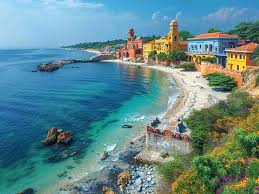
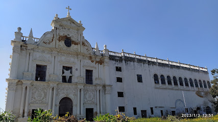
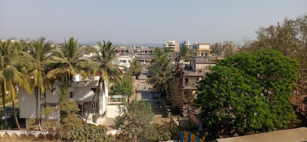
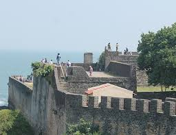
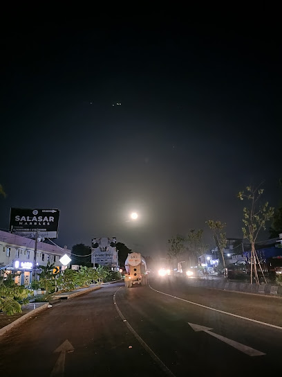
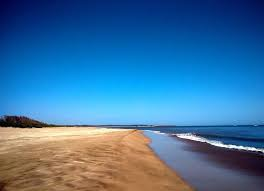
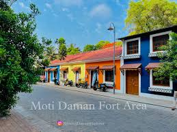
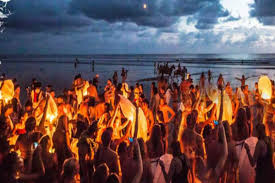
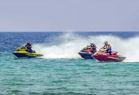
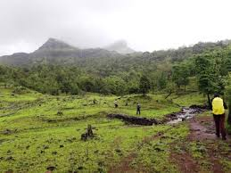

Cities
Daman
- Fort of Moti Daman: A historic fort that offers stunning views of the Arabian Sea, featuring impressive Portuguese architecture.
- Devka Beach: A popular beach known for its scenic beauty and water sports, perfect for relaxation and enjoyment.
- Daman Ganga River: A serene river offering boat rides and picturesque views, ideal for nature lovers.

- Church of Our Lady of the Sea: An ancient church known for its beautiful architecture and serene ambiance.
- Jampore Beach: A quieter beach ideal for swimming and enjoying sunset views.
- Water Park: A family-friendly attraction featuring various water rides and recreational activities.
Diu
- Diu Fort: A historic fort with stunning coastal views, built by the Portuguese in the 16th century.
- Nagoa Beach: A serene beach known for its soft sand and water sports, perfect for relaxation.
- St. Paul's Church: An impressive example of Baroque architecture, renowned for its beautiful interior.

- Jampore Beach: A tranquil beach known for its peaceful environment and picturesque sunsets.
- Gangeshwar Temple: An ancient temple dedicated to Lord Shiva, famous for its unique location by the sea.
- Portuguese Fort: A remnant of colonial history, offering insights into the region's past and beautiful views.
Silvassa
- Tribal Cultural Museum: A museum showcasing the rich heritage and culture of the local tribal communities.
- Vanganga Lake: A serene lake surrounded by lush gardens, ideal for picnics and boating.
- Dudhni: A picturesque spot known for its stunning views of the mountains and water activities.

- Shri Swaminarayan Mandir: A beautiful temple known for its intricate architecture and spiritual ambiance.
- Hirva Van: A lush green park perfect for nature walks and relaxation amidst nature.
- Warli Art Village: A village showcasing the traditional Warli art and culture of the region.
Dadra
- Dadra Garden: A beautifully landscaped garden ideal for picnics and relaxation, featuring a serene atmosphere.
- Vanganga Lake: A scenic lake surrounded by lush greenery, perfect for boating and nature walks.
- Dadra and Nagar Haveli Wildlife Sanctuary: A haven for nature lovers, offering diverse flora and fauna.

- Church of Our Lady of Piety: A beautiful church known for its serene architecture and peaceful surroundings.
- Dadra Village: A quaint village showcasing local culture and lifestyle, offering a glimpse into traditional life.
- Silvassa Tribal Museum: A museum dedicated to the rich tribal heritage of the region, displaying artifacts and exhibits.
Naroli
- Shri Swaminarayan Mandir: A beautiful temple dedicated to Lord Swaminarayan, known for its intricate architecture and serene atmosphere.
- Naroli Village: A quaint village famous for its cultural heritage and traditional crafts.
- Silvassa Tribal Museum: A museum showcasing the rich tribal culture and history of the region.

- Dudhani Lake: A scenic lake ideal for boating and enjoying the natural beauty of the area.
- Vanganga Lake Garden: A tranquil garden with a lake, offering various recreational activities and picturesque views.
- Local Markets: Explore vibrant markets selling traditional handicrafts, clothing, and local delicacies.
Historical Places
Daman Fort
- Daman Fort: A historical fort built by the Portuguese in the 16th century, offering stunning views of the Arabian Sea and rich colonial architecture.
- Light House: An iconic lighthouse near the fort that provides a great viewpoint of the surrounding area.
- St. Jerome Fort: Another historical site close to Daman Fort, known for its impressive walls and scenic beauty.
- Devka Beach: A scenic beach near Daman Fort, perfect for relaxation and enjoying sunsets.
- Church of Bom Jesus: An ancient church known for its beautiful architecture and historical significance.
- Daman Ganga Tourist Complex: A recreational area featuring gardens, water sports, and scenic views.
Diu Fort
- Diu Fort: A historic fort built by the Portuguese in the 16th century, offering stunning views of the Arabian Sea and rich architectural heritage.
- St. Paul’s Church: A beautiful church known for its intricate Baroque architecture, located near Diu Fort.
- Nagoa Beach: A serene beach close to the fort, ideal for relaxation and water sports.

- Light House: A historic lighthouse near the fort, providing panoramic views of the coastline.
- Gangeshwar Temple: An ancient temple dedicated to Lord Shiva, known for its unique architecture.
- Jallandhar Beach: A picturesque beach offering a peaceful atmosphere and stunning sunsets.
Silvassa Tribal Museum
- Silvassa Tribal Museum: A fascinating museum showcasing the rich cultural heritage and traditions of the tribal communities in the region. It features artifacts, traditional clothing, and exhibits that provide insight into the lives of the local tribes.
- Historical Significance: The museum plays a crucial role in preserving and promoting the diverse cultural history of Dadra and Nagar Haveli, offering visitors a glimpse into the art, craft, and customs of the tribal population.
- Visiting Experience: Visitors can explore various exhibits, engage with tribal crafts, and learn about the vibrant folklore of the tribes, making it a must-visit for culture enthusiasts.
- Location: Situated in Silvassa, the capital of Dadra and Nagar Haveli, the museum is easily accessible and well-connected to nearby attractions.
- Visitor Information: The museum is open to the public, making it a great spot for educational visits and cultural exploration.
Other Attractions
Gomatimala Beach
- Gomatimala Beach: A serene and relatively untouched beach located in Diu, offering pristine sands and clear waters, perfect for a peaceful getaway.

- Nearby Attractions: Other nearby places include **Diu Fort**, a historic sea-facing fort, and **Naida Caves**, known for their natural rock formations.
Moti Daman Fort
- Moti Daman Fort: A massive fort built by the Portuguese in the 16th century, known for its impressive walls and historic significance. The fort houses churches, colonial buildings, and offers beautiful views of the Arabian Sea.

- Church of Bom Jesus: A beautiful old church inside Moti Daman Fort, known for its intricate woodwork and historical significance.
- Jain Temple: A
Festivals and Cultural Events
Festa De Diu
- Overview: Festa De Diu is a vibrant festival celebrating the rich cultural heritage of Diu, marked by music, dance, and local cuisine.
- Duration: The festival usually takes place in the month of December, lasting for several days.
- Activities: Attendees can enjoy traditional performances, parades, food stalls, and various cultural programs showcasing local talents.
- Local Cuisine: Visitors can indulge in a variety of seafood and traditional Gujarati dishes at food stalls set up during the festival.
- Cultural Significance: The festival showcases the unique blend of Portuguese and Indian cultures, reflecting the heritage of Diu.
- Art and Craft Stalls: Local artisans display their crafts, offering a chance to buy handmade souvenirs and artworks.
Adventure and Nature Activities
Water Sports
- Jet Skiing: Experience the thrill of riding the waves on a jet ski at beaches like Jampore and Devka.
- Parasailing: Soar high above the stunning coastline and enjoy breathtaking views of the sea and surroundings.
- Banana Boat Rides: A fun group activity where you ride on an inflatable banana boat towed by a speedboat.
- Scuba Diving: Explore the underwater world and witness vibrant marine life at popular diving spots.
- Snorkeling: A great way to experience the sea life while floating on the surface of the water.
- Kayaking: Paddle through calm waters and enjoy the serene beauty of the surrounding nature.
Nature Trails
- Jungle Safari: Explore the lush forests of Dadra and Nagar Haveli with guided safaris, offering a chance to spot diverse wildlife.
- Kayaking: Experience kayaking in the serene waters of Daman and Diu, surrounded by beautiful landscapes.
- Trekking: Enjoy scenic treks through hills and valleys, perfect for nature lovers and adventure seekers.
- Cycling: Enjoy cycling through picturesque routes, taking in the natural beauty of the region.
- Camping: Experience camping under the stars in the serene surroundings of nature.
- Bird Watching: Ideal for bird enthusiasts, with opportunities to spot various local and migratory birds.